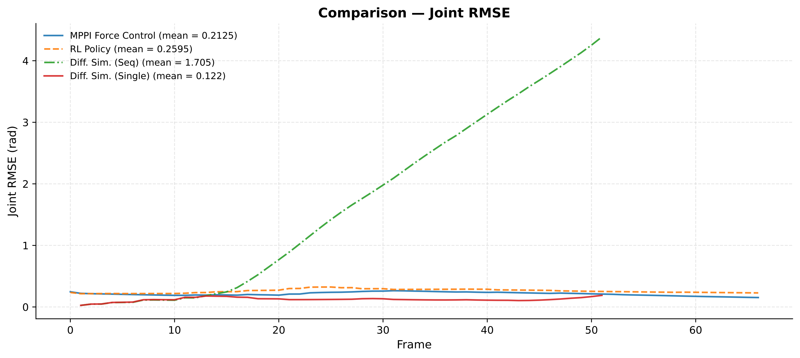
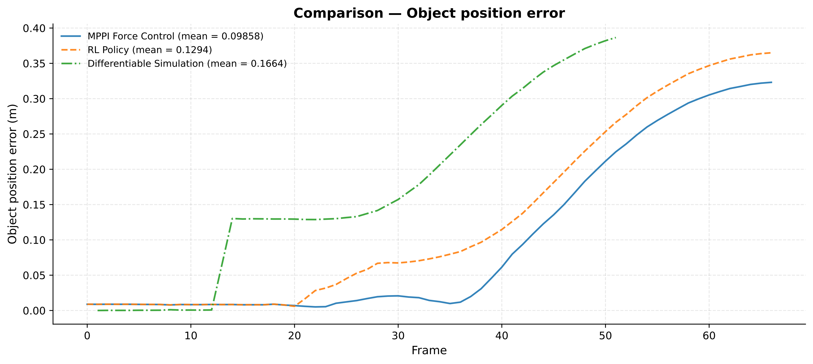
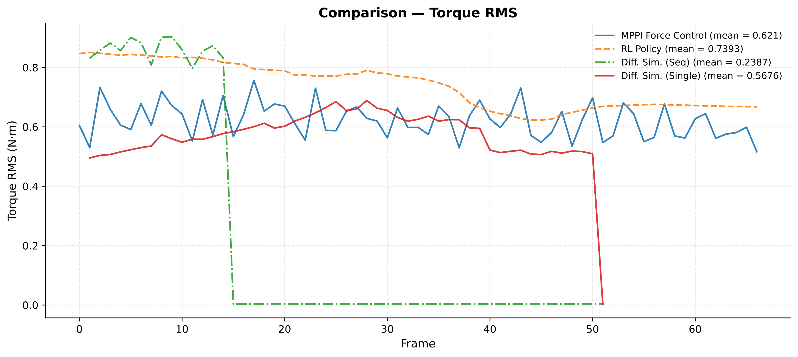
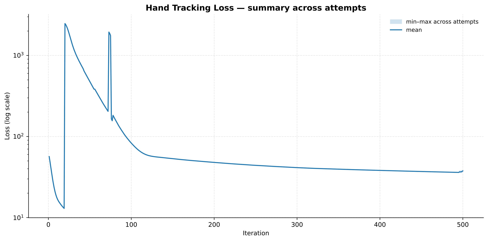
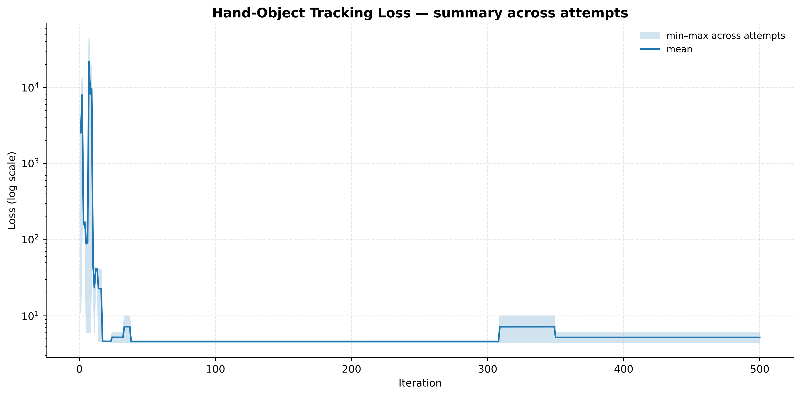
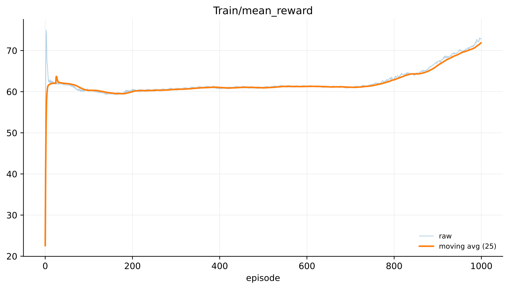

Abstract
Controlling a dexterous robotic hand to reproduce a human grasping demonstration is a challenging contact-rich control problem. While human videos provide a convenient source of demonstrations, retargeting only yields kinematic reference poses and does not specify the forces or torques required for stable interaction with the object.
In this work, we study three representative methods for recovering such control signals from a reference hand-object interaction trajectory: differentiable trajectory optimization through a differentiable physics simulator, sampling-based Model Predictive Path Integral (MPPI) control, and reinforcement learning with a policy-gradient algorithm. We implement the three methods on the same retargeted hand-object sequence using the LEAP hand and compare them quantitatively on joint tracking, object tracking, and control effort.
Our results show that differentiable simulation is sample-efficient but converges to sub-optimal controls once the task becomes contact-rich, as the gradients through contact are unreliable. MPPI and reinforcement learning produce better tracking behavior but fail to establish a stable grasp, and both require substantially more samples. We discuss the trade-offs between these methods and their suitability for offline trajectory generation versus online closed-loop control.
Overview
Given a sequence of retargeted robot hand poses and a reference object trajectory from a human grasping video, the goal is to find physically valid finger controls that cause the simulated LEAP hand to maintain contact with the object and induce object motion consistent with the demonstration. The global hand pose is prescribed by the retargeted trajectory, while the finger joints are controlled through either position targets or torques. We compare three representative methods:
- Differentiable Trajectory Optimization. We directly optimize the sequence of finger controls by backpropagating through a differentiable physics simulator (Nimble Physics). To stabilize optimization, we use a two-stage procedure: first optimize for hand-motion tracking alone, then use the result to initialize a joint optimization over hand tracking and object grasping.
- Model Predictive Path Integral (MPPI) Control. A sampling-based, receding-horizon method that avoids differentiating through contact. At each step we sample 2048 perturbed control sequences with a horizon of 30 steps, roll them out in parallel in the Genesis simulator, and update the nominal control via a softmin-weighted average. The cost combines joint-tracking, object-tracking, contact-proximity, and effort terms.
- Reinforcement Learning. We train a closed-loop feedback policy with PPO that maps the current finger state, reference pose, relative fingertip-object geometry, and trajectory phase to a torque command. The reward mirrors the optimization objective used by the other two methods.
All three methods are applied to the same retargeted sequence from the DexYCB dataset on the LEAP hand, and evaluated on joint-tracking RMSE, object position error, and per-step torque RMS.
Retargeting Result
We retarget a hand-object interaction sequence from the DexYCB dataset onto the LEAP hand using dex-retargeting. The retargeted sequence provides only kinematic reference poses — a starting point from which each control method must discover the contact forces needed to actually grasp the object.
Human demonstration and retargeted motion on the LEAP hand.
Control Policy Results
Below we show the resulting control policies from each method rolled out on the reference sequence. None of the methods succeeds in establishing a stable grasp, but the failure modes differ: differentiable simulation drifts away from the reference once contact begins, while MPPI and RL track the reference hand motion more closely but still fail to induce the demonstrated object motion.
Differentiable Simulation (without object)
Hand-tracking stage: no object is present, so the fingers closely follow the reference trajectory.
Differentiable Simulation (with object)
Joint hand-object stage: contact gradients degrade and the optimizer converges to a sub-optimal control sequence.
MPPI Control
Sampling-based receding-horizon control on the LEAP hand.
Reinforcement Learning (PPO)
Closed-loop feedback policy trained with PPO for 1000 episodes.
Quantitative Comparison
We evaluate all three methods on three per-time-step metrics: joint RMSE (tracking of the reference finger pose), object position error (tracking of the reference object trajectory), and torque RMS (control effort applied to the LEAP hand).
Before the hand makes contact, all methods track the reference hand motion fairly accurately. After contact, differentiable simulation drifts sharply because its gradients through intermittent contact are poorly conditioned; MPPI achieves the lowest tracking error overall, and RL performs slightly worse, likely because PPO has not yet converged within our training budget.

(a) Joint RMSE (rad).
MPPI: 0.2125 · RL: 0.2595 · Diff. Sim. (Seq): 1.705 · Diff. Sim. (Single): 0.122

(b) Object position error (m).
MPPI: 0.0986 · RL: 0.1294 · Diff. Sim.: 0.1664

(c) Torque RMS (N·m).
MPPI: 0.621 · RL: 0.7393 · Diff. Sim. (Seq): 0.2387 · Diff. Sim. (Single): 0.5676
Optimization & Training Curves
We show the loss curves for the two-stage differentiable simulation optimization and the training reward for the PPO policy. The differentiable simulation loss decreases steadily in both stages, but the resulting controls are sub-optimal for the contact-rich problem. The PPO reward curve has not yet plateaued at 1000 episodes, suggesting room for improvement with a larger training budget.

First stage differentiable simulation loss (log scale).
Two-stage optimization: hand-tracking stage followed by joint hand-tracking and object-grasping stage.

Second stage differentiable simulation loss (log scale).
Two-stage optimization: hand-tracking stage followed by joint hand-tracking and object-grasping stage.

PPO training mean reward.
Raw and 25-episode moving average across 1000 training episodes.
Key Takeaways
- Differentiable simulation is highly sample-efficient but unreliable once the task becomes contact-rich — gradients through intermittent contact frequently point the optimizer toward sub-optimal solutions.
- MPPI achieves the best tracking in our experiments, at the cost of thousands of parallel rollouts per planning step.
- Reinforcement learning naturally produces a closed-loop feedback policy, but requires substantially more environment interaction than our training budget allowed.
- These properties suggest complementary use cases: differentiable simulation is better suited to offline trajectory generation, while MPPI and reinforcement learning are more appropriate for online, closed-loop control.
BibTeX
@misc{peng2025dexterous,
title={A Study on Controlling Dexterous Hands},
author={Peng, Weikun},
year={2025},
note={CMPT 720 Course Project, Simon Fraser University}
}